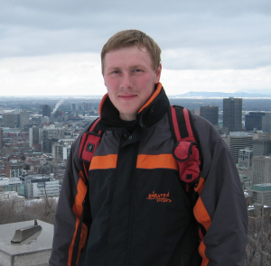

Home
Try It!
Contact
EugeneVM
Contact
Ernst Oberortner

Acknowledgement
Functional Eugene is built on MiniVM developed at the
Complang group
at Vienna University of Technology. The
CIDAR group
at Boston University further augments, modifies, and enhances MiniVM tailoring it for Synthetic Biology usage.